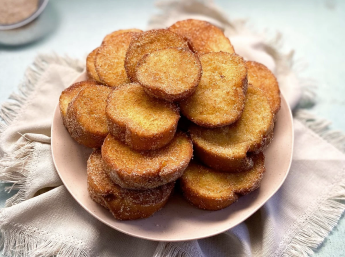

Rabanada Simples

Ingredientes
- 4 Fatias de Pão
- 1 Ovo
- 1/2 Xícara de Leite
- 2 Colheres de açúcar
- Canela em Pó
- Manteiga ou óleo
Como fazer
- Misture ovo,leite e açúcar.
- Passe a Fatia de Pão na Mistura
.
- Aqueça a Frigideira.
- Frite até dourar dos dois lados.
- Passe no açúcar com Canela em Pó.
Dica
- Fica Incrível com Leite Condensado
